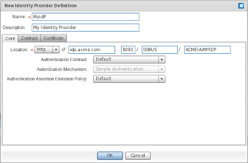
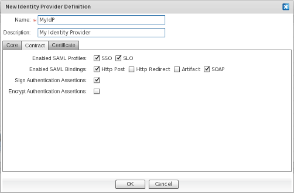
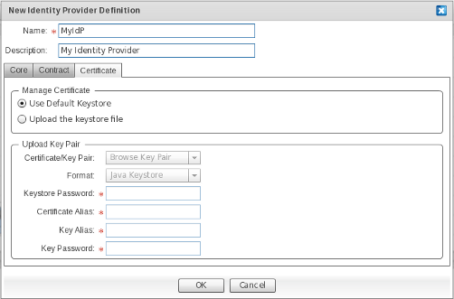
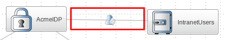

- 7.1. Add an IdP to the Identity Appliance
- 7.2. Set Up the Identity Store of the Identity Provider
- 7.2.1. Using an Identity Vault as the Authoritative Source for the Identity Provider
- 7.2.2. Using an LDAP Directory as Authoritative Source for the Identity Provider
- 7.2.3. Using an RDBMS as Authoritative Source for the Identity Provider
- 7.2.4. Using XML files as the Authoritative source for the Identity Provider
In order to enable an Internet SSO setting you'll need at least one entity playing the role of Identity Provider (IdP). An IdP manages your identity, and provides an authentication service for client applications. IdPs authenticate users and issue security tokens - like Security Assertions Markup Language (SAML). Security Tokens contain user IDs and other identity properties of the user (claims). Examples of some IdPs are: Windows Live ID, Google Accounts and Facebook.
Security Tokens issued by the IdP - upon successful user authentication - are pushed to the parties who rely upon them, commonly known as Service Providers. A Service Provider (SP) is an application that relies on the claims issued by an IdP to authorize a user, and to release appropriate access to that user.
We're assuming that you are beginning with an empty Identity Appliance, with no defined IdP.
From the Palette, click "Identity Provider" in the "Entities" drawer.
Drag the "Identity Provider" element to the preferred location within the Diagram Canvas.

In the "New Identity Provider Definition" window, enter the name of the IdP.
On the "Core" screen, specify how the endpoints of the IdP will be reachable by consumers. The default location is built using attributes supplied at identity appliance-creation time. For the sake of consistency, we strongly suggest that you leave these default attributes "as-is".
Field Descriptions
|
Field |
Description |
|
Location |
The access protocol - whether http or https. Host name, port and context path to which the endpoints for the IdP will be bound. Clients will refer to services provided by the IdP using URIs (Uniform Resource Identifiers) that are qualified using the location value. We strongly suggest that you use a fully qualified host name, so that the identity appliance services are decoupled from a specific physical host. |
|
Authentication Contract |
The message contract for submitting input claims, such as user credentials, to the IdP. The default (and the only available contract) builds on JOSSO-specific parameters, which are submitted whenever simple web-based authentication is attempted. |
|
Authentication Mechanism |
The means by which users are authenticated. The only supported authentication mechanism is Simple Authentication which performs the identification of users based on username and password. |
|
Authentication Assertion Emission Policy |
Used to customize how assertions are issued, upon successful authentication. The authentication assertions issued are conveyed via security tokens, which are pushed to relying parties. |
On the Contract screen, specify the SAML Profiles and Bindings to be enabled, as well as the level of security for the artifacts involved in message exchanges between SPs and the IdP.

Field Descriptions
|
Field |
Description |
|
Enabled SAML Profiles |
The SAML Profile to activate for this IdP. These mainly represent the usage scenarios realized by the IdP. The most important SAML profile is the "Web Browser Single Sign-On Profile", which can be enabled by selecting the SSO checkbox. Select the SLO checkbox to enable Single Logout Support. |
|
Enabled SAML Bindings |
The SAML bindings to be enabled for the chosen SAML profiles. Specifies the mapping of a SAML protocol message onto standard messaging formats and/or communications protocols. Select the Http Post checkbox to convey SAML messages through HTTP Post. Select the Http Redirect checkbox to convey SAML messages through HTTP Get. Select the Artifact checkbox to convey SAML messages through the SAML Artifact Binding, which builds on both HTTP Redirect and SOAP bindings for exchanging SAML messages. Select the SOAP checkbox to convey SAML messages through SOAP over HTTP(s). |
|
Sign Authentication Assertions |
Determines whether SAML Authentication Assertions will be digitally signed. Digitally signing SAML Authentication Assertions provides proof-of-identity of the IdP to Service Providers, as well as ensuring their integrity. |
|
Encrypt Authentication Assertions |
Determines whether SAML Authentication Assertions will be encrypted. Encrypting SAML Authentication Assertions provides confidentiality to SAML messages, therefore avoiding eavesdropping. |
On the Certificate screen select the keystores holding the private and public key pairs used to secure SAML message exchanges between SPs and the IdP.
The second step involves setting up the building blocks of the trust system, which is based on public key infrastructure (PKI). The trust system allows for provision of peer authentication, integrity, confidentiality and non-repudiation in a transport-agnostic fashion. The SAML standard - which JOSSO supports - builds on PKI to guarantee these security attributes for SSO message exchanges. The requested information is mainly used by providers, to access private and public key pairs.

Field Descriptions
|
Field |
Description |
|
Use Default Keystore |
Use a built-in JKS-compliant keystore. Choosing to use the default keystore is only recommended for sandbox settings, where security is not really an issue. Within a production system, using a custom keystore is strongly recommended. |
|
Upload the keystore file |
Use custom keystore file. |
|
Certificate Key Pair |
Select this if you'd like to upload a keystore file from the local file system. |
|
Format |
The format of the keystore file. The only supported keystore format is Java Keystore. |
|
Keystore Password |
The password that the IdP will use to decrypt the supplied keystore, in order to access the key pair entries stored within. |
|
Certificate Alias |
The identifier of the keystore entry for the IdP's public key. |
|
Key Alias |
(TBD: check this with GB - same as above) The identifier of the keystore entry for the IdP's private key. |
|
Key Password |
The password required to obtain the keystore entry which holds the Identity Provider's private key. |
Click on OK to confirm IdP element creation.
Click on Cancel to abort IdP element creation.
In order to use the Identity Vault as the identity store for an IdP, an identity vault element needs to be defined for the identity appliance. See ??? to learn more on how to set up an Identity Vault.
Once an IdP and Identity Vault elements have been defined for the current Identity Appliance, use the Identity Lookup connection to connect them both.
From the Palette, click "Identity Lookup" in the "Connections" drawer.
Click on the source IdP element and drag the edge to the target Identity Vault element.
An edge should appear connecting the IdP and Identity Vault elements.

In order to use an LDAP Directory as the identity store for an IdP, an LDAP Identity Source element needs to be defined for the identity appliance. See ??? to learn more on how to set up an LDAP Identity Source.
Once an IdP and LDAP Identity Source elements have been defined for the current Identity Appliance, use the Identity Lookup connection to connect them both.
From the Palette, click "Identity Lookup" (TBD: insert image) in the "Connections" drawer.
Click on the source IdP element and drag the edge to the target LDAP Identity Source element.
An edge should appear connecting the IdP and LDAP identity source elements.

In order to use a Relational Database as the identity store for an IdP, an RDBMS Identity Source element needs to be defined for the identity appliance. See Section 6.3, “Set Up an RDBMS Identity Source” to learn more on how to set up an RDBMS Identity Source.
Once an IdP and RDBMS Identity Source elements have been defined for the current Identity Appliance, use the Identity Lookup connection to connect them both.
From the Palette, click "Identity Lookup" in the "Connections" drawer.
Click on the source IdP element and drag the edge to the target DB Identity Source element.
An edge should appear connecting the IdP and DB identity source elements.

In order to use XML documents as the identity store for an IdP, an XML Identity Source element needs to be defined for the identity appliance. See ??? to learn more on how to set up an XML Identity Source.
Once an IdP and XML Identity Source elements have been defined for the current Identity Appliance, use the Identity Lookup connection to connect them both.
From the Palette, click "Identity Lookup" in the "Connections" drawer.
Click on the source IdP element and drag the edge to the target XML Identity Source element.
An edge should appear connecting the IdP and XML identity source elements.